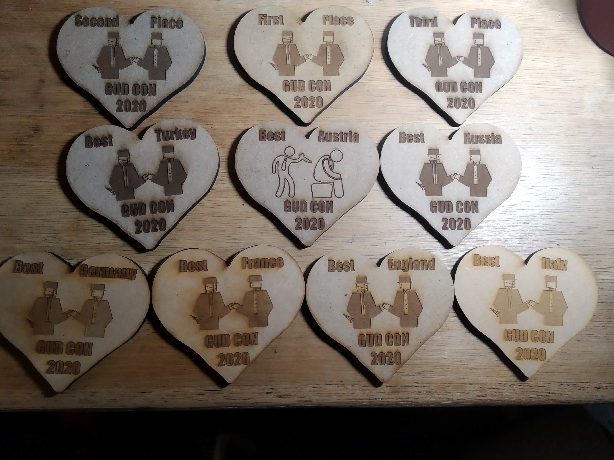

GUD Con 2020 – February 15-16
Georgetown University Diplomacy Convention 2020
Location: Georgetown University Leavey Center Program Room
3800 Reservoir Rd NW,
Washington, DC 20057
Round 1: February 15th
Registration: 8:15-8:45 AM
Board Call: 9:00 AM
Round 2: February 15th
Registration: 5:00-5:30 PM
Board Call: 5:45 PM
*All games must end before midnight. TD will randomly and secretly choose a time between 10:45 and 11:45, and any year beginning after that point will immediately end the game.*
Round 3: February 16th
Registration: 8:15-8:45 AM
Board Call: 9:00 AM
Award Ceremony: February 16th
5:00 PM

23 players for our mini one-round tournament on November 17th
Where to stay?
The Georgetown University Hotel and Conference Center is right on campus and will be a convenient place to stay: https://www.acc-guhotelandconferencecenter.com/
Parking?
You can park in the Southwest Garage. On Saturdays, the daily rate is $25. On Sundays, parking should be free. Refer to the following link for more information on parking: https://transportation.georgetown.edu/driving-and-parking/#VisitorParking
Fees/what to bring/food
No entry fees, but donations are welcome! Pens, order writing pads, and Diplomacy sets will all be provided. We will have snacks and drinks available, but please feel free to bring your own. The event will take place in the same building as Royal Jacket, a Deli that sells sandwiches from 12-7pm. If you are not a Georgetown student, due to the nature of the Georgetown University meal plan, Georgetown students with extra meal swipes may be willing to help procure free sandwiches for attendees looking to save money. Other close-by meal options include Starbucks and Chick-Fil-A (Saturday only), not to mention the numerous dining options within walking distance of campus.
I have never played Diplomacy before!
Do not worry- you are not alone. We want to provide a friendly environment for players new to the game, and will have many resources for beginners. The Tournament Director is your first stop in terms of questions about rules. New player guides and beginner’s strategy articles will also be provided.
Scoring system
We shall be using the popular Sum of Squares scoring system to rank each player’s performance throughout the tournament. An explanation of the Sum of Squares system can be found here.
Trophies
The trophies are Valentine’s Day themed wooden hearts featuring artwork drawn by a Georgetown student. The top 3 players will each win a trophy. Additionally, the player with the highest score for each country will receive a Best Country award. In order to spread the love, each participant can only win one Best Country award (their highest scoring country).
Slacker’s Board
In acknowledgement of the fact that college students like to sleep in, we’ll have a special “Slacker’s board” on Saturday and Sunday that starts at 11:00 AM. They will not be on the central clock, but follow their own time schedule. Players on the first Slacker’s board can still participate in the second round, but may need to be on two boards simultaneously due to time constraints. Keep in mind that being on a Slacker’s board will significantly reduce your potential Diplomacy playing time.
A player cannot play in both the Slacker’s Board and the normal board for the round. For all tournament purposes, the Slacker’s Board will be considered as if it had taken place at the actual start of the round.
Subs
Requesting a substitute will result in a void score for the requesting player in that round.
Interested? Click here to put your name on our Google Spreadsheet!
Diplomacy Resources
www.jorgezhang.com/diplomacyresources
Can’t make it? Watch the results LIVE
diplomacytv.com
Questions? Reach out to jsz26@georgetown.edu.